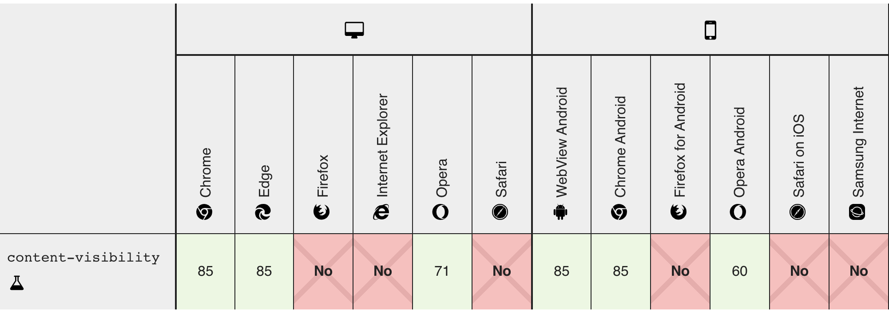

Why we need to use content-visiblity ?
Applying content-visiblity: auto to an element tells the browser to skip rendering work for that particular element until it is scrolled into the viewport,
we can use it for each section, where it optimizes initial rendering.
It is available from chrome 85 and in edge 85.
